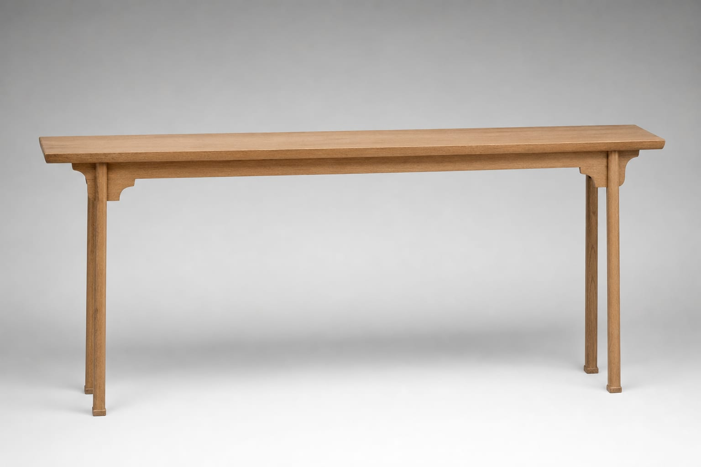
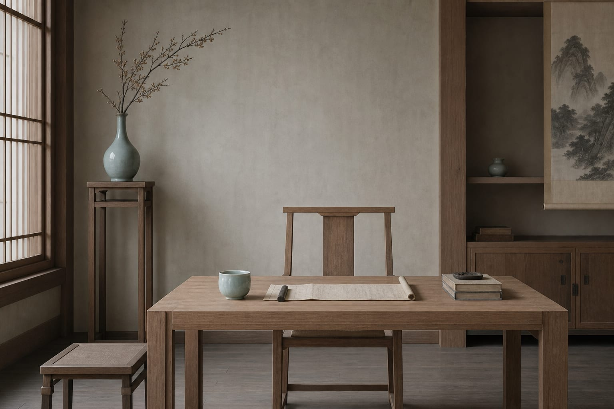
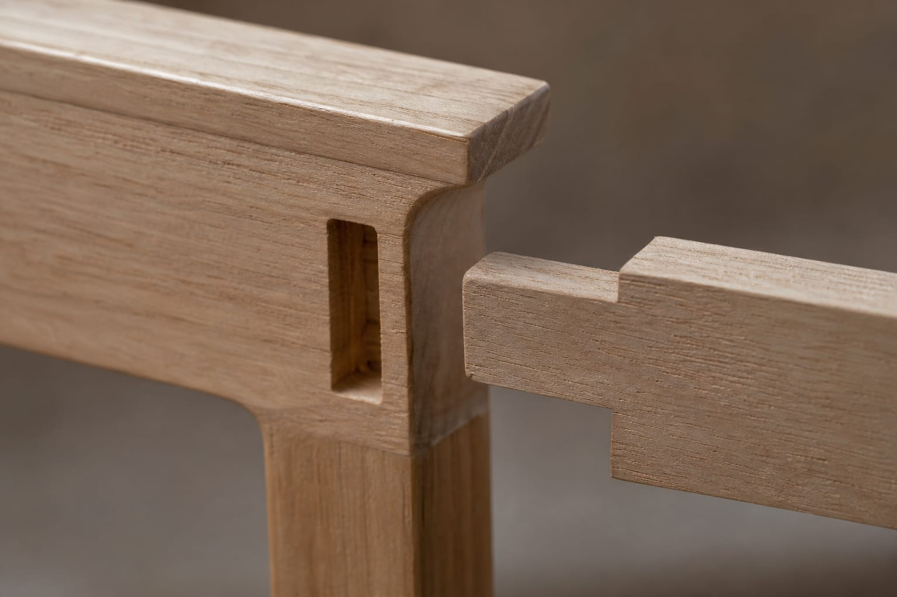
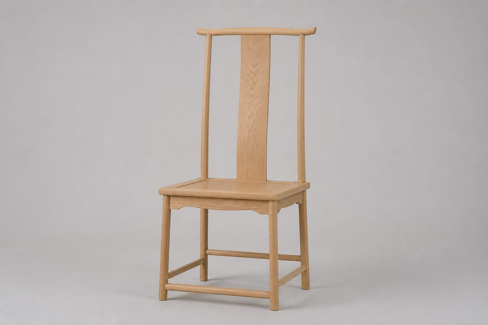
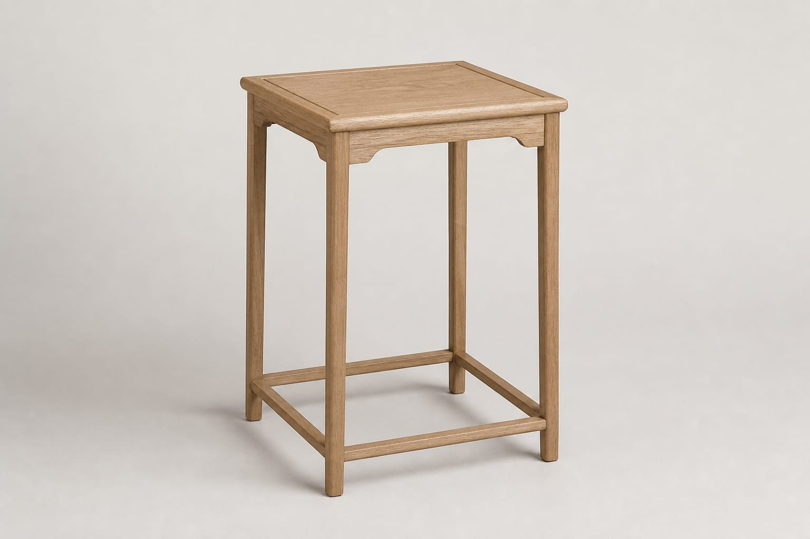

疏影条案
细长案面，牙子简洁，可陈设书画、香炉，为空间定调。
宋代是中国美学史上极为重要的一页。家具形制趋于成熟，风格极简挺拔，与宋瓷、宋画共享一份「平淡天真」的审美品格。

宋代家具承唐制而变，高型家具逐渐普及，案、椅、床、柜等品类完备。宋人崇尚理学，追求内省与克制，反映在家具上便是线条挺拔、结构清晰、装饰极少。
《宣和博古图》等文献与宋代绘画中的家具图像，为我们留下了珍贵的形制参考。心中式宋式系列，即从这些视觉史料中提炼比例与神韵。


细长案面，牙子简洁，可陈设书画、香炉，为空间定调。

直背无扶手，座面略宽，坐感端正，适宜书房静读。

四足直立，几面方正，可置盆景或古籍，点缀一隅。